Security Module
- Introduction
- 1.1 Security groups
- 1.2 Users
- 1.3 Roles
- 1.4 Permits
- 1.5 Access groups
1. Introduction
In the security section of the control panel you will find the tools to manage the security of the whole system. From here you will be able to register users, roles with permissions and access groups that will define the level of access to the information of the users that use the application.
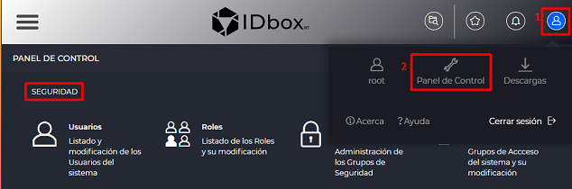
The security module is accessed from the user icon - Control Panel button .
1.1 Security groups
The user who consults the Security Groups section will be able to see all the groups associated to that user. Depending on the role assigned to the user, new security groups can be created, modified or deleted from the Security Groups section.
The security group concept can be applied to parent companies and their child companies or to the departments of a company.
Each security group has its own visual theme and can be associated with Roles and Groups for accessing documents and signals separately from the other groups. The user will only see the available elements of his Security Group, if he has several associated groups, the one he has configured as ‘Default Security Group’ in his Profile.

When opening the section a table with the security groups to which the user belongs will be displayed. The table will show the Name, Description, Logo and if it is Active.

In the upper right part of the table there are icons for adding a new group or editing or deleting a selected group.
Clicking on the icon to add a new security group will open the form that allows you to configure the characteristics of the security group.
The form is structured in 2 parts:
-
Data
-
Parent

In the case of modifying an existing group, the previous screen will have the corresponding group data loaded, allowing its modification.
Configurable characteristics:
-
Name: Name of the security group
-
Description: Description of the security group
-
Culture: Allows selecting the culture for the security group.
-
Time zone: Allows configuring the default time zone.
-
Corporate color: Displays the color selector. The selected color will be the theme color of the security group.
-
Theme: Select the default theme of the security group (Light or Dark).
-
Logo: Logo of the security group. It will open a browser dialog box to load the file in PNG or SVG format. The logo will appear as the application icon if this security group is being displayed (if selected in the ‘Default security group’ section of the Profile form).
-
Parent security group: A parent security group can be assigned to the group being configured.
To save the changes select the save icon .
When creating a security group, 2 roles (Administrator and Viewer) and an access group (Default) are automatically created.
At any point the option is provided to change the security group currently in use as a reference when viewing, creating and saving on the web. Using the selector at the top right shown in the following image, it is possible to first display the currently selected security group as well as to use the drop-down to choose a group from those available.

Thus, when a new group is chosen, the website will be updated to adapt its view to that perspective in terms of permissions and content. It is important to note that the current reference security group is a personalized individual choice in the browser that will be remembered until the browser or session is closed, and is completely independent of the default security group selected in the user’s profile.
1.2 Users
The Users section allows you to register new users and to view, manage (activate or deactivate, delete, modify characteristics and permissions) existing users in the system.
The Users screen consists of a table that shows, for each of them, their first name, last name, user name, whether they are active (the corresponding check box is checked) and their e-mail address.

Clicking on the icon to add a new user will open the form that allows you to configure the user’s characteristics.
The form is structured in 3 parts:
- Data
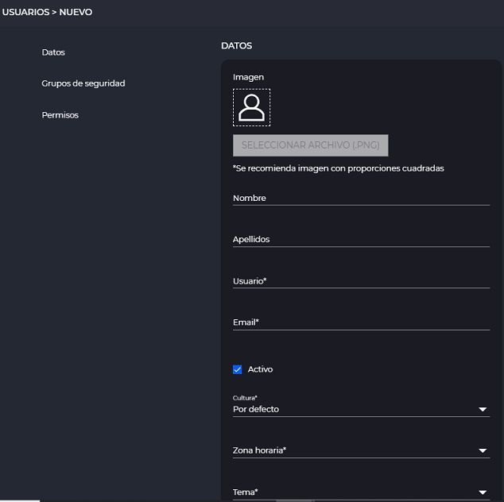
- Security groups
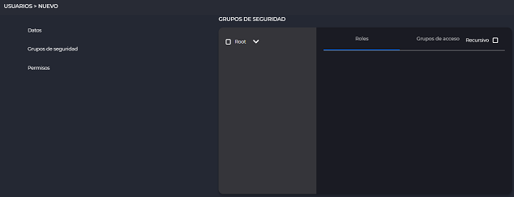
- Permits

In the case of modifying an existing user, the previous screen will have the corresponding user data loaded, allowing its modification. Aditionally a new section will be shown: “Advanced options”.
- Advanced options
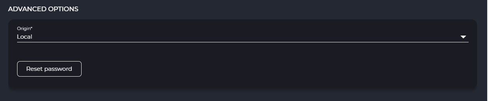
Configurable characteristics:
-
Image, First name, Last name, User, Email, Culture, Time zone, Subject (detailed in section Profile): If in culture the option Default is left the user will apply the culture of the security group to which he/she belongs.
-
Active: If checked, enables the user. If unchecked, the user will not be able to log in, he/she will not be able to access the application.
-
Security groups: The first box (left) shows a tree with the available security groups (click on the corresponding arrow to display them). When marking the security groups to which you want to link the user in the box on the right, the 2 tabs show the roles and access groups associated to the selected security groups. Select the role and groups to which the user will belong.

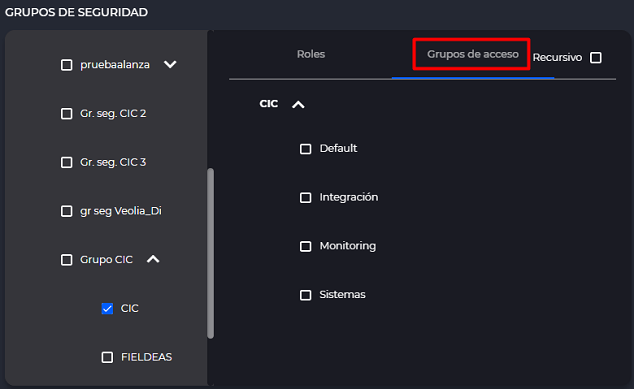
- Permissions: This section shows a table with the various permissions assignable for each section. Hovering the cursor over the icons in the table header (1) shows the actions for which permissions are given. The user will have the permissions of the boxes marked with a check (2). The permission with a dash (3) means that it does not apply at the level of that section. You can click on the icon of a particular action to select all sections of that action.

These permissions may be restricted or extended depending on the role settings of the assigned access group.
- Advanced options : This section gives us two options. One is resetting the user password clicking the button “Restet password”. The other is to modify the origin of the user “Local”, “LDAP” or “Extern”. “LDAP” will be used for those users that are from LDAP when one is configured in the system. “Extern”, are those users that are logged e.g. with Google, if it is configured. “Local” is for everyone else, the ones that we create normally on this screen.
The first time the new user logs in, the application will force him/her to change the password:
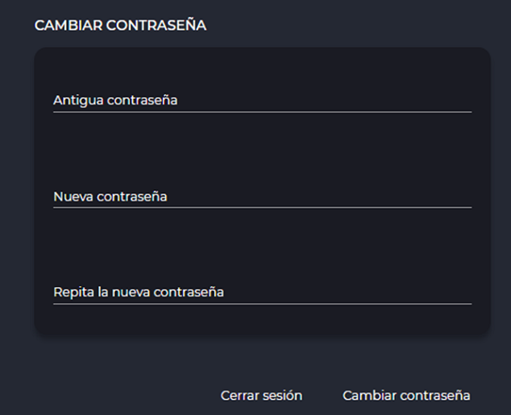
1.3 Roles
The Roles section allows you to view the list of available roles for the different security groups. It also allows you to manage them (add new roles, modify or delete them), if you have permissions.
Roles allow you to group a set of permissions for a Security Group. When assigning a Security Group to a user, by selecting the corresponding role, these permissions are granted.
The Roles screen consists of a table showing, for each role, its name, description, the security group to which it belongs and whether it is active.
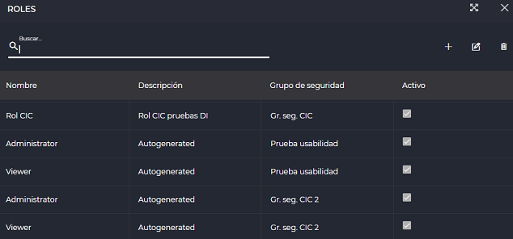
On the right side there are three buttons that allow you to create a new role , edit and delete the selected role.
Clicking on the icon to add a new IDbox role will open the form that allows you to configure the role characteristics.
The form is structured in 3 parts:
-
Data
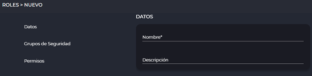 -
Security groups

-
Permisos
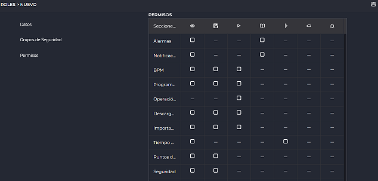
In the case of modifying an existing role, the previous screen will have the corresponding role data loaded, allowing its modification.
Configurable characteristics:
-
Name: Role identifier.
-
Description: Role description.
-
Security Groups: In the first box (left) there is a tree with the available security groups (displayed by clicking on the corresponding arrow). The role must belong to a security group and can only belong to one.
-
Parent Role: Displays the other existing Roles of the selected Security Group. By selecting a parent, the role will inherit all permissions from the parent. Additional permissions can be added to the child role
Note: To select a parent uncheck the Do not select option.
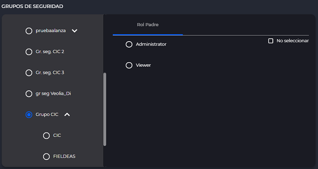
When a security group is created, the application automatically creates 2 roles: Administrator and Viewer. In the form of each of these 2 roles the corresponding Permissions can be consulted.
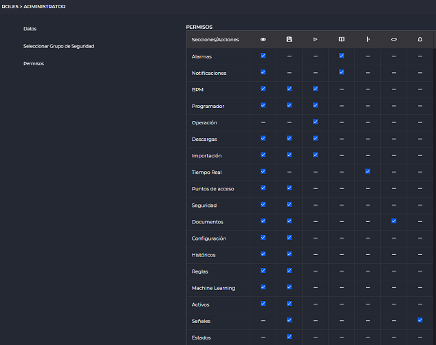
- Permissions: Displays a table with permissions for each section. Hovering the cursor over the icons in the table header (1) shows the actions on which permissions are given. The user will have the permissions of the boxes marked with a check (2). The permission with a dash (3) means that it does not apply at the level of that section. You can click on the icon of a particular action to select all sections of that action.

To save the changes select the icon .
1.4 Permits
The following will detail the Permissions settings in the new/edit Users and Roles forms.
Permissions are displayed in a table where the intersection of a row with a column represents a permission.

1.5 Access groups
The Access Groups section will display the access groups associated with the logged in user.
Access groups enable read or read/write access to a set of documents, signals, enables or disables access to a site.
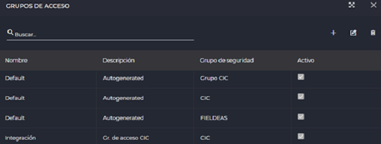
Access groups act as a filter on which elements the logged on user can interact with.
An access group can only have users assigned to it who belong to the security group in which the access group is registered.
The permissions defined in an access group take precedence over user permissions or role permissions. The read permission on an access group overrides the write permissions of a role.
Access groups allow people with the same roles to access different information depending on which access group they belong to.
At the top left there is a search engine to filter the groups that are displayed. At the top right there are three buttons: add (+) or edit (pencil) or delete (trash) an existing group (if you have the corresponding permissions).
The table with the access groups will show the Name, Description, Security group (to which the access group belongs) and whether it is Active.
When adding a new security group, a screen like the following will appear (in the case of editing an existing group, the same screen will appear with the loaded data of the group being modified):

The configurable fields in the ‘Data’ section are:
Name: Name for the access group.
Description: Description of the access group.
Read: Checkbox for read permissions. It is checked by default and cannot be modified.
Write: Checkbox for write permissions. Enables write permissions for the access group.
In the Security group section, a drop-down tree appears with the nodes of the different security groups to which the connected user is associated. The access group to be configured must be associated to a security group (required field).
Parent Access Group allows to associate a parent to the access group. The parent will be selectable among the access groups linked to the security group selected before.
To save the changes select the save icon (floppy disk).